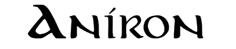
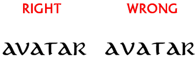
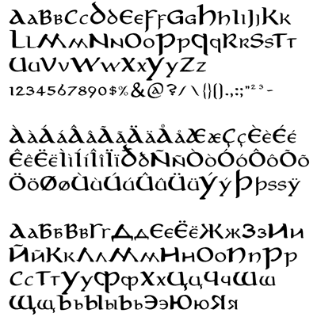

© Pete Klassen, 2004. All Rights Reserved.
For ideas, questions or contact: thehutt@gmx.net
German Version Russian Version
About this font
The Aniron font is a replication of the font used in the front and end credits of Peter Jackson's "The Lord Of The Rings" trilogy. It has been created by analyzing the characters in the movie credits as well as "Lord of the Rings" SEE DVD, where this font is used to a great extent.
Because the resolution on DVD is not high enough, I had to retrace the characters manually. Also, I created some missing characters, as well as the punctuation, numbers and some other characters. Also, a Cyrillic character set has been created from scratch.
The font contains the following character tables:
- Latin alphabet (the usual)
- Extended Western characters (accent characters like í, ä)
- Cyrillic characters (Russian alphabet)
- Numbers, punctuation etc.
To learn about usage of Cyrillic alphabet in Photoshop, read below.
Installation
This font is designed for use with Windows systems. In order to install the font, unzip the ZIP file into a directory on your hard disc, run Control Panel, Fonts, select File->Install New Font, select the directory you've extracted the archive into. You should see two fonts: "Aniron" and "Aniron Bold". After successful installation, the Aniron font is available for use.
Usage
You can use the Aniron font for headers as well as for paragraph text. Some measures have been done to ensure that it looks good and readable in both cases.
The Unicode version of Aniron contains 2660 kerning pairs. If your application does not support kerning, the result will look a bit worse:

As you see, on the right example, the spacing between "AV" and "AT" is too large. For instance, Winword does not seem to support kerning. Graphics programs like Photoshop, Illustrator, Corel Draw, however, do.
The capital characters are 150% size of the small characters. In the movie credits, capital characters are not used at all. However, there are capital characters in the LotR DVD bonus materials, with the same size ratio.
Also, notice that to match the bonus materials, the font has to be stretched vertically by the factor of 120%.
About the Cyrillic version
The font contains two main Unicode tables - the Western (containing accent letters) and the Cyrillic (Russian letters). The main advantage of Unicode is the possibility of using Cyrillic characters without losing the accent letters, which Western users are more likely to require. To use Cyrillic in Unicode programs (like Microsoft Word), it is sufficient to switch the keyboard layout to Russian. Then the Cyrillic character set will automatically be selected.
Unfortunately, this does not work on older operating systems (like Windows 9x) on non-unicode programs. Plus, and more important, Unicode support does not seem to work flawlessly on Photoshop. So, if you type Cyrillic characters in Photoshop, it will display accent letters instead.
Therefore, I created an extra Cyrillic package of the Aniron font, AnironC. The only difference is - it does not contain accent characters. Instead, Cyrillic characters are duplicated on the accent characters as well as on their own unicode table. You can download AnironC separately from my website.
Notice: You only need AnironC if the normal Aniron does not work well on your system and you need Cyrillic letters.
Font Sample

Copyright Disclaimer
The Aniron font is © Pete Klassen, 2004. All Rights Reserved.
You are allowed to distribute this font free of charge only, and only with the complete contents of the original archive file included.
You are allowed to use this font for private use only. Commercial use and/or modification of this font are not allowed.
Aniron Font is based on the "Lord of the Rings" credits font. "Aniron" is a song by Enya from the first LotR movie and means "I desire" in Elvish. "The Lord of the Rings" movie trilogy is © 2001-2003 New Line Cinema and Wingnut Films. All Rights Reserved.
PS: it's just another font from a fan for other fans.